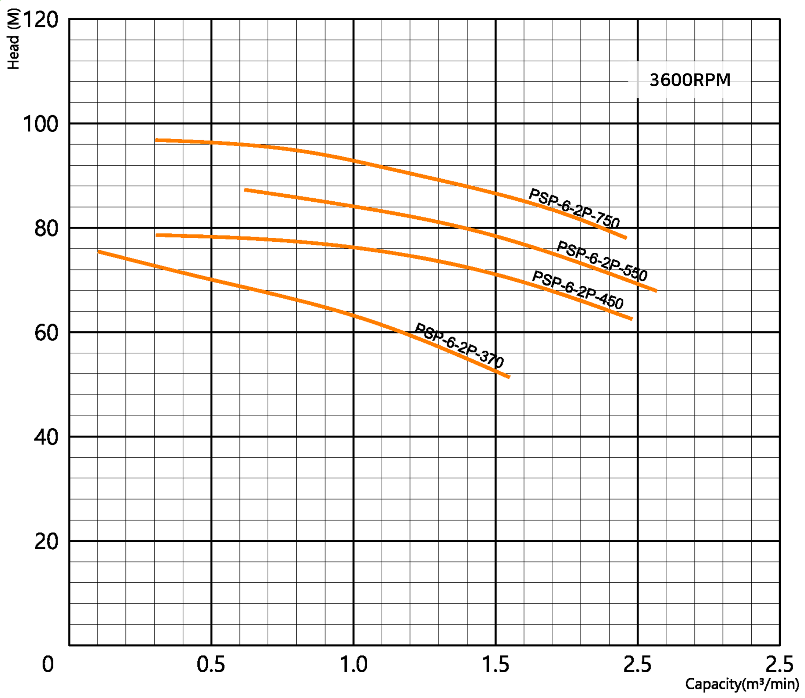
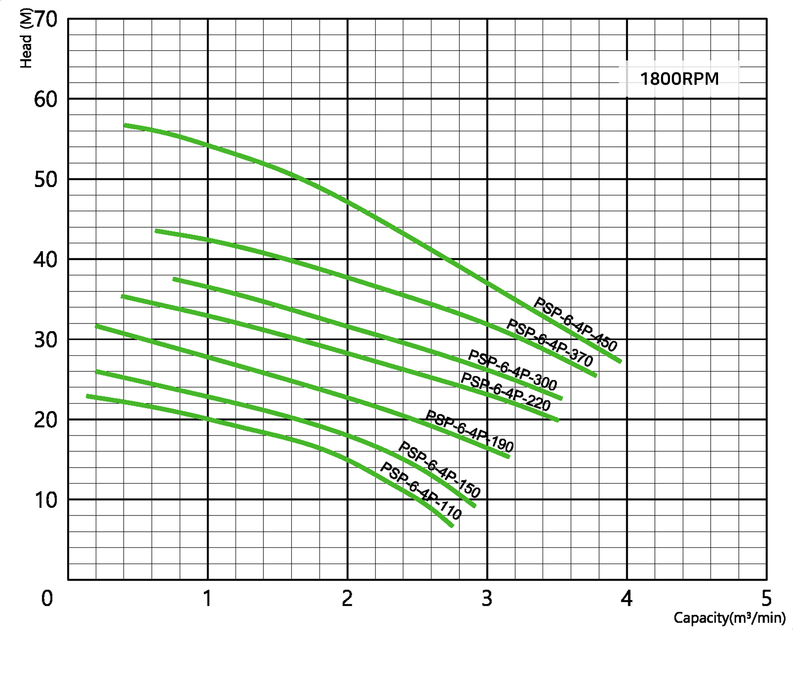
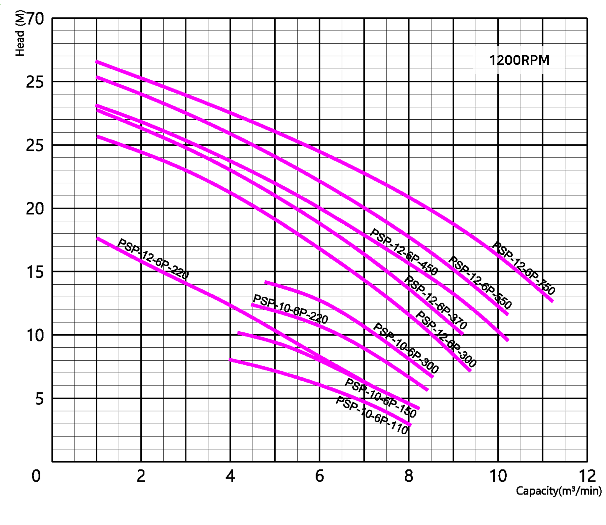

수중펌프 수중 스프르트 펌프(Submersible Spurt Pumps) 용도 중계펌프장 오수 이송용 축산폐수이송용 하수 및 분뇨처리 원수 이송용 고형물이 포함된 오수,오물 처리장용 농축 슬러지 이송용 맨홀펌프장 마을 하수 중계펌프 및 슬러지 이송 특징 걸림 없는 디자인 임펠러 /Spurt Impeller 마모성 슬러지 포함 유체 이송에 적합 이물질에 의한 고장 최소화 성능곡선도 (Performance Curve)    표준사양 (Standard Specifications)